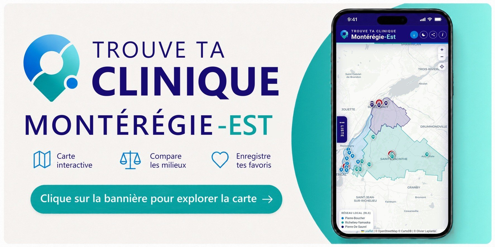

Montérégie-Est
Secteurs en recrutement en établissement
Des médecins du territoire parlent de leur pratique.

Vidéo de Santé Québec Montérégie-Est.
Beaucoup de médecins de famille partagent leur temps entre une clinique et un secteur en établissement. Urgence, hospitalisation, UCDG, longue durée (CHSLD), soins à domicile, réadaptation, détention : voici ceux qui recrutent en Montérégie-Est.
Les coordonnées de chaque responsable sont disponibles sur la carte interactive.
Informations à jour au : .
Explorez par secteurs
Choisissez d’abord une famille de pratique, puis un secteur.
Le chiffre indique le nombre de milieux en recrutement pour le cycle 2027.
RLS Pierre-Boucher 7
RLS Richelieu-Yamaska 7
RLS Pierre-De Saurel 4
Missions régionales 4
Où voulez-vous pratiquer ?
Ouvrez la carte interactive de la Montérégie-Est : milieux, coordonnées et personne-ressource au recrutement.
